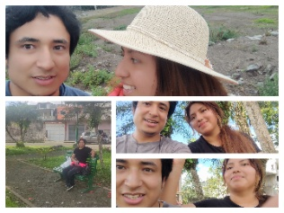
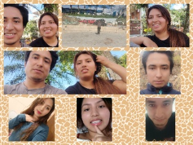

Un regalo, página por página
Juntos desde hace calculando...
para ti
✦Aveces vuelvo a tus fotos, como quien vuelve a un lugar. No porque espere encontrarte. Solo porque cuesta soltar
El día donde todo empezó a tener sentido... No sabía que el destino podía escribirme un mensaje el 7 de septiembre de 2022, y que ese mensaje se llamaría 'Babysita'. Al principio solo era curiosidad, pero con el tiempo te convertiste en mi hogar.
1
Hay canciones que me hablan de todo lo que no fue, y me dejan preguntandome si alguna vez lo pensaste tambien, porque algunas despedidas llegan antes de empezar
Viajaste hasta aquí, peleaste con tu ma, le mentiste, todo solo por verme. Caminamos, reímos y por un instante sentí que el mundo era solo nuestro. Ese día entendí que no hay distancia que pueda con el corazón.
2
Fuiste un casi, un que habría pasado, dos corazones tan cerca, pero en distinto lado, y aunque nunca fuiste mía, hay algo que no entendí, ¿Como es que se extraña tanto algo que nunca vivi?
Madrugaba a las 3:00 AM solo para escucharte mientras trabajabas. Hablábamos de todo, de la vida, del futuro, de nosotros. Me prometiste que si en 3 años no encontrábamos a nadie, viviríamos juntos. Yo aún guardo esa promesa.
3Tal vez el problema fue imaginar demasiado. Construir un castillo sobre algo tan callado pero no elijo lo que siento ni a quien recordar
El 1 de octubre de 2025 me di cuenta de que te amaba. No como a una amiga. Te amaba como al alma que me completa. Y aunque el mundo nos puso una barrera, yo siempre quise estar a tu lado, sin importar nada más.
4Hubo un tiempo en que nuestras voces se cruzaban en la oscuridad de la madrugada, y yo sentía que el mundo se detenía solo para escucharte. No fuimos una historia de amor. Fuimos una historia de almas que se encontraron, que se entendieron, y que el tiempo decidió dejar a medio escribir. No sé si algún día volverás a llamarme 'baby', ni si volveremos a reír como antes. Pero sé que cada palabra que compartimos, cada instante en que te sentí cerca, incluso a kilómetros de distancia, quedará guardado en mí. Hoy, en este día, no quiero desearte felicidad. Quiero desearte paz. Que nunca olvides que, en algún rincón de este vacio mundo, hay alguien que realmente te ama sin condiciones. Que siempre, siempre, te vaya bien. Te quiero Babysita, y siempre lo haré. Wily..
con todo mi cariñoToca el libro o usa las flechas para pasar las hojas